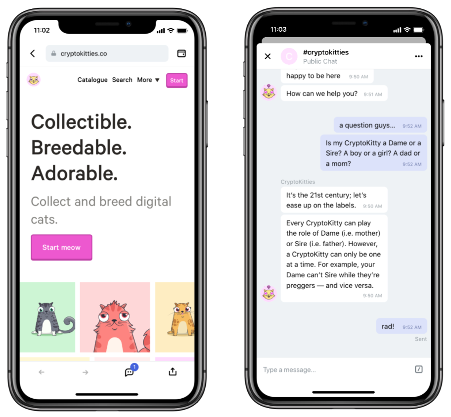

Conversation as a Means of Sustainable Community-Building
At Status, we really care about building a better web and this starts with a deep understanding of “The Web That Wasn’t” and all the great ideas that we seem to have lost along the way, most often in the name of convenience or simply because they were at odds with corporate or shareholder or state interests.
Some of the most interesting ideas include Vannevar Bush’s notion of the Memex, where the trail each user traced through the various documents they pulled up and compared actually became a part of the “social space” of those documents. This meant we could achieve both top-down, hierarchical classification of knowledge in tandem with grass-roots, bottom up organization defined by actual use.
This notion of conversational or social space was picked up by people like Doug Engelbart (particularly in reference to his work on Knowledge Repositories) and Ted Nelson (the father of hypertext, Xanadu, and many other mad and wonderful things). For visionaries like these, computers were not solipsistic devices, they were a means to more connection, a method of encouraging collaboration at scales never before possible such that we could solve the increasingly complex problems facing modern society.
At Status, we want to play a small part in bringing back some of these ideas and building a web that really is more distributed, more accessible, and more humane. This is why, in every DApp you open in Status, you’ll find a little chat icon in the bottom right, which will open a chat using a whisper topic that is generated from the DApps name.

Want to find the CryptoKitties community so you can trade some new cats you’ve bred with your peers, directly though chat. Just join the #cryptokitties chat on Whisper, through Status. Want to find out more about Gitcoin, how to find and solve bounties and generally plug into the awesome group of developers they have? just join the #gitcoin chat.
We really are excited about being able to bake in these kind of conversational, community spaces as an inherent part of the architecture we are building for a better web. Join us in making connection easier and celebrating what is best and most human about the work we are all involved with.
Add Your DApp Chat to Our Default Public Channels
You’ll find a list of default chats if you navigate to Join a Chat from the homescreen of Status. If you’re as excited as we are about this notion of conversational spaces, then consider adding your DApp chat (which is simply an open topic on Whisper) to the default list so that new people see it immediately when downloading Status and figuring out which chats to join and take part in.
All you need to is simply edit this JSON file and add the name of your chat. It really is as easy as that…